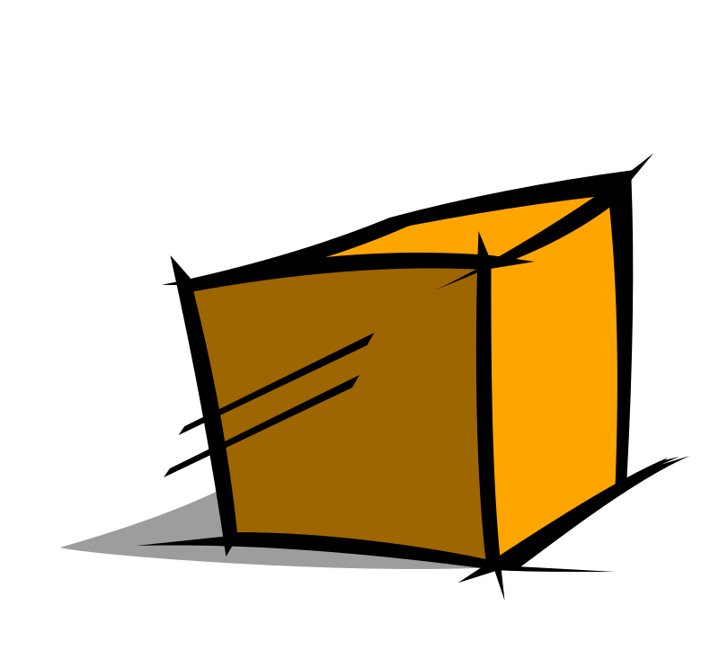
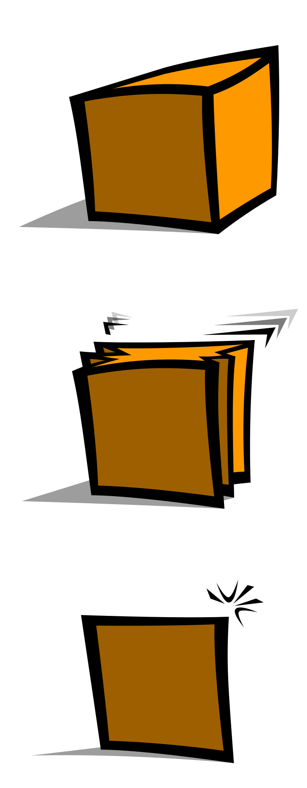
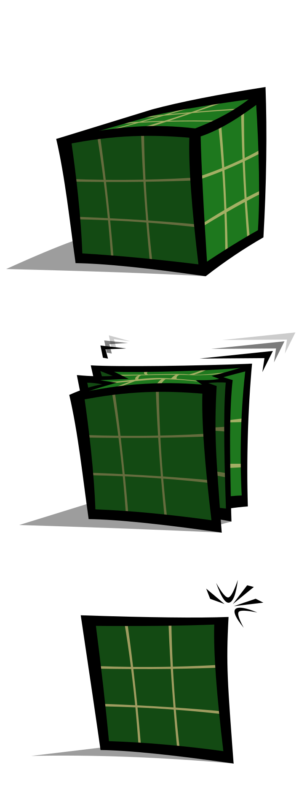
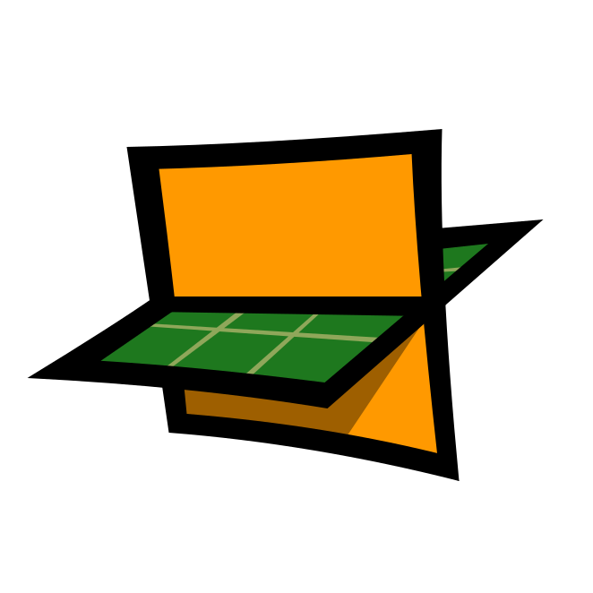
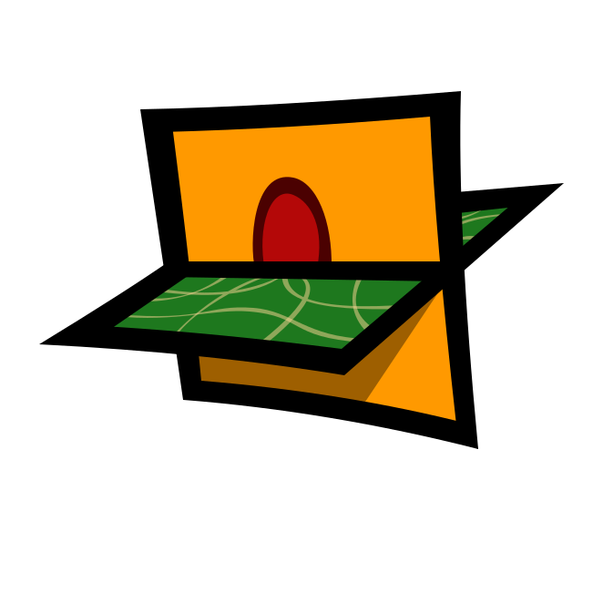

In this scene, E = mc2 and you probably recognize that the letter c in that equation refers to a speed; specifically, the speed of light.
Now, you also know that the little number two: 2 means squared, which is the same as saying "times itself"
We can re-write that equation as:
Normally when you think of speed, you think of it in terms of some fraction - that is, "some distance per time" as in: "miles per hour" or "meters per second" or "furlongs per fortnight" - whatever you want, speed is typically expressed as some quantity of distance being covered in some amount of time.
That distance could be in any direction, in three dimensions; it doesn't have to be in only one dimension. Normally you drive straight ahead, but you could go left-and-right, forward-and-backwards, or even up-and-down if you're flying - so speed can be thought of as an amount of space being covered in a given time.
We could say that:
Exactly how much space being covered, and passing time,
the speed of light contains is not imporant -
whatever the
exact numbers are, we don't care for now; we just need
to understand that the letter c refers to
some amount of
Substituting that fraction for c in the equation, we should get:
With a little algebra, we can move one of those fractions to the other side:
This is the relationship between energy E and mass m used for the computations in this scene. Energy and mass are proportional to eachother in this way:
When you have a fraction, it means that one thing is divided up over some other thing - if you have, say $80, and you 'divided it up' among ten people, what that means is, you're 'spreading out' the eighty dollars over the ten people.
If a farm has 30,000 stalks of corn 'per acre' that means the stalks are spread out over the acres.
What we mean by
Saying that something is 'evenly distributed over time' just means that the thing exists.
If an object did not persist for any amount of time, then it wouldn't exist by the standards of what the term 'exist' typically means. That an object has length and width and depth is only applicable if it also has persistence.
Your company leases a storage unit - the unit is rented based on its dimensions, length, width, height, but also by its duration, that is, the time of the lease. If you have a six-month lease on a storage unit, sure your company has access to 8×10×12 feets of space, but after that six months expires, it's no longer applicable to anything your company does.
Similarly, if there weren't any dimension for an object to exist in, then it wouldn't exist. If you only had two dimensions, then 'spheres' would only exist as whatever circle happens to be intersecting the plane of your existence. There needs to be some space for mass to occupy. Your company better rent a storage unit with enough dimensions to hold whatever you need to store.
By saying
On the other side of the equation, we have
In this scene, the universe has had a grid laid out over it, in order for you to visualize it more easily - each section of the grid contains some amount of energy as well as some time.
Scrolling over the scene causes specific locations to begin consuming the universe around them. [Scroll left-to-right over the scene, or drag the slider - click in the slider bar to animate.]
These locations devour the surrounding grid and convert that into an object; an object that occupies the dimensions that were converted from the space around them, and which persists throughout the time which was also pulled through from the grid.
That is to say, when you start scrolling, things start moving from one side of the equation to the other.
Again, the masses ingest the grid, and turn it into more mass - this consumption causes the grid to warp. Eventually, the distortion forms a very strong and noticable connection between the centers of each object.
The grid does not warp to accomodate the mass; neither does the presence of the mass cause space to warp.
The masses are the wrapping of space up into a ball. Energy and time-space are sucked through to the opposite side of the equation, and that forms an object.
The 'attraction' the objects have towards eachother's center is the distortion that occurs as the objects swallow the surrounding grid-space.
If space-time is a 'fabric', imagine that
fabric laid out on a table. Then, pinch
the fabric somewhere in the middle and start
crumpling it up into a ball in your hand.
Eventually, the fabric will be distorted and
wrinkled up, and there will appear to be a ball
in the middle of it. There isn't a ball,
or an object, or a mass, or anything - it's just
the fabric being crunched up. The fabric isn't
distorting because of some object that's inside
it - the object IS the distortion of the fabric.
Now imagine that someonelse also starts
pinching the fabric in a different place.
[This is a big piece of fabric - imagine it's
a large bed sheet, and it's spread out on the
floor.]
You both pinch the sheet at a different place
somewhere in the
middle and start crumpling it up into a ball.
After a little while, your hands are
going to start getting closer to eachother.
That is, since you're both pulling the sheet
into your hands, the part of the sheet that's
between your two hands is getting pulled into
both of your hands at once; unless you tear
the sheet [don't tear the sheet! you'll get
in trouble], your hands will start getting
closer to eachother until the two wads of
fabric you're both crunching up touch one another,
and become a single big ball.
If we're both eating the same string of spaghetti,
from opposite sides, either the spaghetti is going
to snap, or we're going to kiss.
Again, there is no force pulling the two things
together - the 'pulling force' is the wadding
up of the sheet into a ball. It's the
drawing up of the sheet into a ball that appears
to draw the two things together.
And there aren't 'things' - there just
appear to be things because the sheet is
crunched up in different places.
[Note that this animation does not show the
part where the masses start getting closer
to eachother - though it could, ofcourse, do
that from the same calculation; it's simply
intended to emphasize, for now, the
grid-becoming-mass portion of what's happening.
You should also be able to see that the masses
are 'attracted' in many directions
at once - along every different line in the
grid, in fact - it's just that a preponderance
of grid-lines has been concentrated between
the 'centers of mass' of each object.]
Make a box ...

You got it? It's a box; it's got all the parts, length, width, height - it even exists for some period of time. It contains all of the dimensions that a box usually has.Now, conceptually, collapse the box, in one direction; squoosh it down into a square ...

Alright? It still has all of its dimensions. We are just going to use this plane as a representation of the dimensional space of the box - we're going to imagine that one of the box's dimensions has been flattened down so far that the box now looks like a square. All of the dimension, and space, and everthing that was originally inside the box is still there; we're simply using a flat plane to represent the whole box.Now do that same thing with another box; a different box that has been divided up using a grid ...

The length, width, height, depth, time, everything is still in there, we're just collapsing one of the directions so that we can use a square to represent the entire box.At this point, we have two different planes of existence. We have two squares, or planes, that are representative of fully-dimensional realms.
Take the two planes, and intersect them...

That is, effectually, what is happening in this scene.
Remember that the mass side of the equation does not exist at first; as things move from one side of the equation, they construct the other. The energy and grid-lines get projected through as mass; the dimensions transfer through to create the length and width and height needed to hold the mass; the time gets transposed into the time needed for everything to persist.It would either be confusing or impractical to attempt to show two different three-dimensional realities intersecting eachother at right angles, which is why they were reduced to planes for this example.
The grid does not warp to accomodate the mass. The masses do not distort the grid with their presence. The objects are not drawn towards eachother. There is no gravity. There are no objects.
~queviva